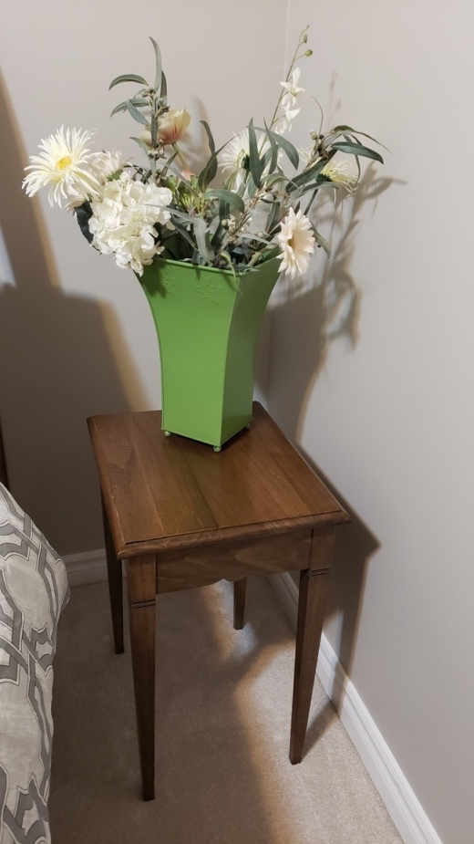
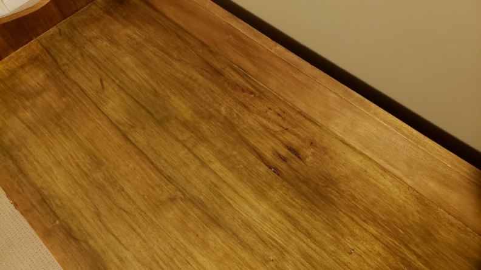

Introduction
My introduction to woodworking began back in 1979 in grade seven. Once a week, we were bused to a local school for woodworking, home economics, or art.
My first project was a reasonably simple sculpture that didn't require any exceptional skills. Starting with dimensioned lumber, I used a hand saw to cut the two pieces I needed to size, the main sculpture and a base. The two parts were shaped with a bandsaw, and then I used a rasp and sandpaper to refine the cut edges. A hole was drilled into each piece, then a short dowel was used to connect them. A quick stain and I'd completed my first woodworking project.
The inspiration for my sculpture came from the Concorde, which at the time was a relatively new French-British turbojet-powered supersonic airliner, capable of a maximum speed of over twice the speed of sound.
The following year I stepped it up a notch, making a pair of bookends that combined my woodworking and art projects. I added basic joinery to my repertoire using butt joints to assemble the bookends. In art class, I drew a running elk and pressed the image onto thin copper plates, which I stained and attached to the bookends with brass brads. These bookends have adorned my bookshelves everywhere I've lived, except Japan, since 1980.
I continued woodworking throughout high school. Taking woodworking classes happened somewhat through fate. Every year I tried to take Auto Shop or Electricity; however, I was an Advanced student, so the General level students got priority for shop classes. Inevitably, during the first week of classes, I would be kicked out so General level students could take my spot, leaving woodworking as my only option, which I guess was less popular than the other shop classes.
I ended up getting six high school credits for woodworking, which developed the foundation of my skills and started a lifelong passion for a hobby I hope to enjoy in retirement as a more full-time endeavor between rounds of golf.
Grade nine brought an introduction to hand tools where we took raw lumber and had to dimension and finish some of the pieces by hand. For most of the other work, we were allowed to use the shop machinery. Oddly, for this project and the cabinet I built in grade eleven, I used willow. I liked the colour and grain, but most of all I chose it because it was the cheapest wood available for purchase in our woodworking class. In all my trips to lumber yards since I've never encountered willow as an option to purchase, nor have I come across an article in a woodworking magazine or book that mentions willow as a wood choice for building furniture. Maybe willow's availability was due to being in the Niagara Region, which had a lot of willows lining the shores of the rivers in the area.

In the grade ten woodworking class, we built a toolbox, which introduced hinged joints and was my first project using plywood. It sat empty for twenty-five years until we moved into our first house and I started buying tools for home renovations.
Grade eleven involved a much larger project. I built a cabinet from plans I found in a magazine. I was quite satisfied with the build; however, I was in a rush at the end of the project and selected a poor finish. I've always intended to strip and redo the cabinet finish but never got around to it.
For the top, I selected the best figured wood. However, once finished and ready for assembly, I agonized over which side to use. The original pristine side turned out exactly as I wanted, and the opposite side intended to face inward was flawed with rot hollows. In the end, I chose the flawed side because I thought it added character to the piece. Overall the rot details enhanced the intended rustic appearance of the cabinet and added an immediate sense of age. Going with the alternate side was a decision I've never regretted and continue to make similar choices on projects in the constant battle between my perfectionist nature and artistic instinct.

The grade twelve woodworking class project was a step stool. The challenge was working out joinery that involved joints intersecting at compound angles. The stool still resides in my shop and is as structurally stable as the day I built it, although now it has a more distressed look from use. High school woodworking classes provided the foundation for my furniture making and construction knowledge, skills that have served me well throughout my life.
On the commute into work this morning, I heard on the radio that most millennials have never used basic tools such as a screwdriver or hammer and rely on their fathers for assistance. Trades and hand tool skills appear to be in decline, but I've moved in the opposite direction, preferring to do renovations and build furniture myself. I rarely see a piece of store-bought furniture that I'd purchase by choice and prefer to find a quality antique or make it myself.
The savings gained doing the renovations myself leaves extra budget for high-end finishing and more flexibility for customization. Also, I struggle with paying someone for subpar work and only bring in help if a job requires specialized skills or equipment, or to save time.
Home renovations began with our first house, purchased in 1997 in Acton, ON. At first, I think my wife was skeptical of my capabilities and some of the projects I pursued, but over time and after seeing the results, she came to trust that I would get the job done. The only concession was that it often took a long time, and as a result, our houses were always in some form of half-completed renovation and rarely in a state of completion to satisfy her requirements to host parties.
Following high school, my woodworking took an extended hiatus (1987-2001). I spent several years in university and college, lived in Japan for a year, began my career, got married, and started a family. During that period, I kept an eye out for furniture I liked and kept a mental list of furniture projects I wanted to tackle in the future.
The chance to do a quick furniture build, a computer cabinet, came shortly after moving into our second house. Time was short, my son Ben was a newborn, and the tools I had on hand were limited. I knew exactly the type of cabinet I wanted to build, and I ran out to Home Depot one Saturday morning and purchased 2' x 4' pine boards. Armed with a skill saw, router, and drill, I went to work and completed the cabinet in under an hour.
The cabinet fit the space in my office and served its purpose for the time we spent in that house. Being in IT, I built my computers and was constantly upgrading the system or needing access to the connections on the back of the computer. To simplify access, I designed the right side of the cabinet as removable to provide easy access to the connection ports or to remove the whole computer case. Now it serves as a computer stand for a set up I use primarily for listening to music.
Building that computer cabinet reignited my drive to get back into woodworking, but it would be several more years before I was able to start. Home renovations took precedence - we moved into our third house (Richmond Hill) and then a fourth (Newmarket). During that period, I spent a lot of time perusing the Lee Valley website planning for the day I could finally pull the trigger to stock my woodworking shop with tools. It was shortly after moving into our fourth house in 2012 that I could dedicate a room for a workshop, had a small amount of free time, and was in a financial position to start buying tools. However, the main incentive to get back into woodworking was building a hall table for my wife's birthday present.
It's now early spring 2023, and I'm regularly in the workshop. There has been a steady progression of projects, workshop improvements, jig-making, and tool purchases since 2012 that have led me to begin writing this journal.
I find myself wanting to spend more and more time woodworking for many reasons. I look forward to heading down into the workshop in the evenings after work. Woodworking provides a great mental break to clear my mind of the constant problem resolution and stress that comes with my career as a Cyber Security Specialist. I don't even have to be working on a project. Just going down into the shop to clean up, sweep the floor or sharpen a chisel or plane blade helps to ease my mind. An added benefit of just doing chores is that when I dive into a project, the shop and tools are ready to start working. My mind immediately switches gears after stepping into the shop and taking in the fragrance of the wood.
Besides stress, the other detriment to my health after spending a quarter of a century in Cyber Security is that I have developed tendonitis. The occasional flare-ups cause my hands to swell up and become extremely painful, stiff, useless clumps at the end of my arms. Using my hands for woodworking provides a great form of physical therapy that counters the impact of typing on a keyboard and using a mouse all day for work.
I thoroughly enjoy the time I spend woodworking and have a long list of projects lined up for the future. I probably won't get through all of the projects given I'm now in my mid fifties with retirement still a few years away. One reason for writing this journal is to keep track of the lessons I learn, to capture the knowledge I gain with each project, and who knows, maybe it will become a helpful reference for someone once completed. It is abundantly clear to me through my research and efforts so far that woodworking is a hobby requiring continuous practice and a lifetime to achieve a high level of mastery.
My intention for writing this journal is to document the thought processes and techniques used to build furniture I've designed to outlast me and to pass down from one generation to the next. I have lofty ambitions of making furniture that encompasses the lessons and techniques learned by past master furniture makers with timeless appeal and the construction to survive the rigors of everyday use. And who know, the details referenced in this journal may allow someone many decades or hundreds of years from now to perform the inevitable repairs needed to keep the furniture functional or maintain its appearance.
I expect this journal will undoubtedly provide value for me, at least as a record of what I've accomplished and who knows maybe as a guide for others as well. It's all about the journey ahead.